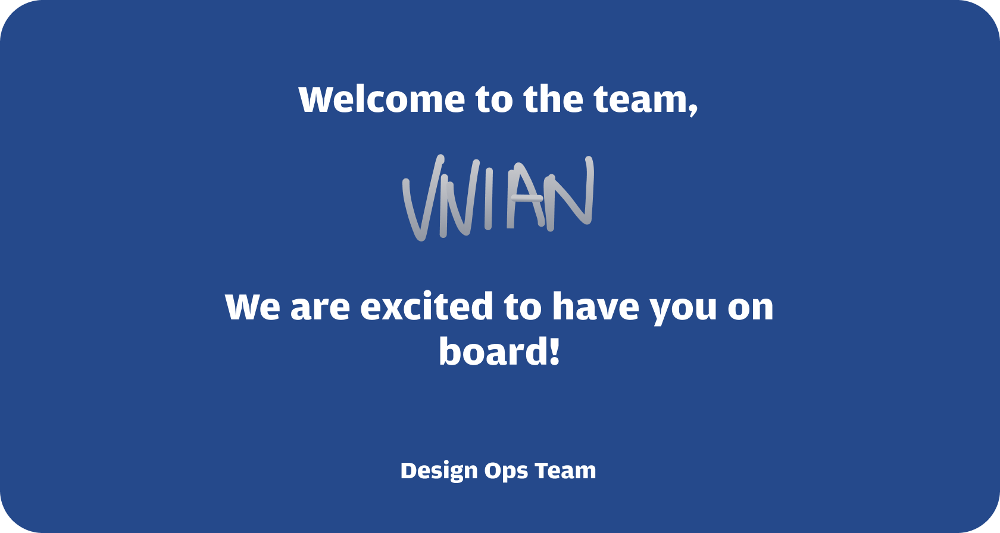

Prototype micro-interaction on Design Ops team core components in Figma to speed up design production and user testing prototypes.
Worked on two different internal products of the Corporate Financial team; here, I combed through and created specifications for UI on various screens and carried out usability testing for them before sending them off to developers.
Lastly, designed a welcome postcard that would be included in the Design Ops team new-hire swag box.
Role
Product Design Intern
Timeline
June 2022 - July 2022
Team
Design Ops Team
Micro-Interactions
Microinteractions are trigger-feedback pairs in which:
The trigger can be a user action or an alteration in the system’s state;
The feedback is a narrowly targeted response to the trigger and is communicated through small, highly contextual (usually visual) changes in the user interface.
Importance of Micro-Interactions
One of the greatest joys of using technology comes through user empowerment and engagement.
An enjoyable experience means more than just usability — it needs to be engaging, and that is where micro-interactions can play a macro role, by positively contributing to the look-and-feel of a product or service. Micro-Interactions are essential because:
They make the user experience much more rewarding
They provide instant and relevant feedback about a completed action to a user
They communicate information about certain elements, like whether or not it’s interactive
Designing Micro-Interactions
To make the good Micro-Interaction, the following steps are necessary:
Put yourself in the users' shoes and use all that you have to figure out how they use your app.
Create functional animations. Animations that have not only an aesthetic but which can enhance the user experience.
Have fun and entertain your users. What the user feels when they use the app is the reason behind the fact that they keep using it. If the user enjoys the experience and finds it pleasant, they return.
Do not be annoying. Too many animations have the opposite effect on users. Annoying users make them stay away from your app.
Use human language and non-technical. A funny and ironic copy can make you forget for a moment how frustrating it might be a blank page within the app.
Demo
Here is a link to design
memo
presenting Micro-Interactions on the team's core components.
Welcome Post Card

Key Takeaways
Being a designer of Chase's internal platform team gave me a glimpse of the company's design infrastructure from the perspective of how designers can consult product teams about scalable design system patterns and guidelines that are applied in their customized solutions to create seamless end-to-end experiences.
I was able to quickly acclimate and get comfortable with the design methodology used by the tech sector while preserving design quality by producing instructional resources for inclusive design, managing individual project ownership, and communicating with cross-functional partners.
Sometimes when my cross-functional partners provided conflicting feedback, it was challenging to find a balance and bring my designs to an agreement, but I learned to understand and empathize with their positions. A product manager might advocate for designs that align more closely with the product road map while an engineer might prefer designs that can be implemented effectively. Understanding different internal goals and trying to bridge the gap was a fun challenge.